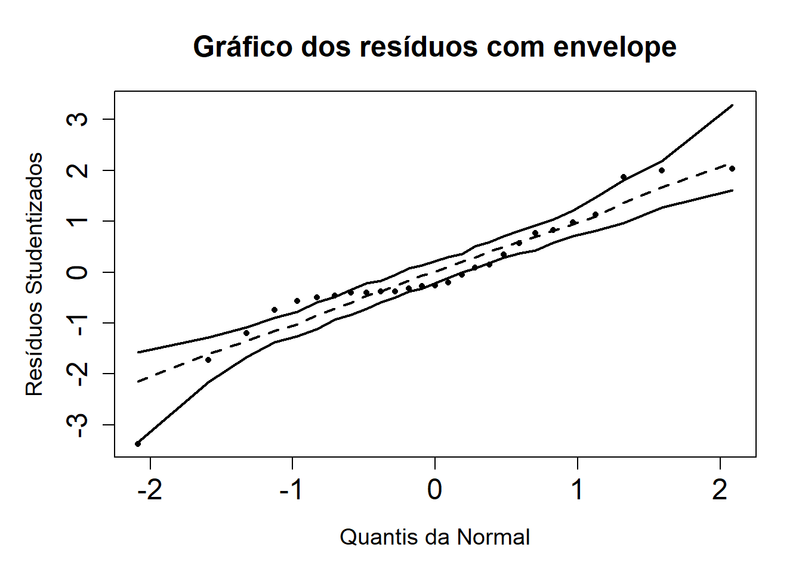
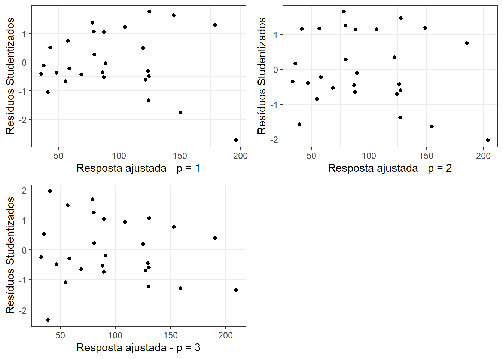

Nesta seção, exploraremos dados referentes a 27 estabelecimentos industriais. Tentaremos explicar o número de supervisores em função do número de trabalhadores desses estabelecimentos.
As primeiras seis linhas desse conjunto de dados são expostos na tabela a seguir.
Iniciamos a análise exploratória com a inspeção visual do gráfico de dispersão entre a variável resposta, nsupervisores, e a variável explicativa, ntrabalhadores.
É notável uma dispersão em formato de cone, o que sugere heteroscedasticidade da variável resposta.
Code
ggplot(supervisores, aes(nsupervisores, ntrabalhadores))+geom_point()+labs(x ="Trabalhadores", y ="Supervisores") +theme_bw()
Além disso, é possível observar que as distribuições parecem razoavelmente simétricas, porém com leve assimetria positiva. O número de trabalhadores (20500) também é muito superior ao de supervisores (2550), havendo em média 8 trabalhadores por supervisor. Essa razão tem limite entre 6.2 e 12.2.
fit <-lm(nsupervisores ~ ntrabalhadores, data = supervisores)
Ajustamos um modelo de regressão linear simples usando a função lm(), cujos estimadores e suas características são espostos a seguir. O coeficiente de determinação do modelo é R^2= 0.78.
O estimador do modelo tem as suas características dispostas na tabela a seguir. O coeficiente de determinação do modelo é de R^2= 0.78, ou seja, 78% da variação da variável resposta pode ser explicada pela variável explicativa.
No entanto, este coeficiente seria aplicável a um modelo com resíduos homocedásticos e com distribuição normal. Visualmente, já se trata de um modelo com resíduos heteroscedásticos porém, mediante aplicação de teste Shapiro-Wilk, obtém-se p-valor de 0.2, não sugerindo rejeição da normalidade.
Análise de resíduos Studentizados
Se montarmos um gráfico de resposta versus resíduos Studentizados vemos novamente indícios para resíduos heteroscedásticos.
Uma análise visual do gráfico dos resíduos Studentizados versus quantis da normal demonstram um padrão periódico com diversos pontos fora da banda de confiança. Contrariamente ao teste Shapiro-Wilk, esta avaliação sugere fuga da suposição de normalidade.
Code
source("envelope_function.R")envelope_LR(fit, OLS = T, main.title ="Gráfico dos resíduos com envelope")

Modelos sob Mínimos Quadrados Ponderados
Nesta seção supomos que Var(Y) = \sigma^2 V, com V = diag\{x_1^p, x_2^p, \dots, x_n^p\}, com p = 1, 2, 3. Ou seja, serão ajustados três modelos, transformações do modelo original, decompondo via Cholesky a matriz V = PP^\top. O novo modelo é dado por
que não possui um termo constante, portanto não possui intercepto. Os novos modelos são ajustados utilizando a mesma função lm(), porém ajustando o argumento weights = 1/(ntrabalhadores)^p. A tabela com os estimadores e suas características para os modelos sem intercepto são expostas a seguir.
De fato, observa-se que o modelo transformado explica em torno de 7% a mais de variância do que o modelo não transformado, para qualquer valor de p dentre os disponíveis.
Os gráficos de resposta ajustada versus resíduos Studentizados e gráficos normais de probabilidade dos resíduos Studentizados com envelope simulado são expostos a seguir. De fato, utilizando p = 3 parece resultar em melhor comportamento dos resíduos, mas não é possível concluir nada sobre p=2.
Code
ajuste1 <-tibble(ajustados =fitted(fit_w1),res_stu = stats::rstudent(fit_w1)) %>%ggplot(aes(ajustados, res_stu))+geom_point() +theme_bw()+labs(x ="Resposta ajustada - p = 1", y ="Resíduos Studentizados")ajuste2 <-tibble(ajustados =fitted(fit_w2),res_stu = stats::rstudent(fit_w2)) %>%ggplot(aes(ajustados, res_stu))+geom_point() +theme_bw()+labs(x ="Resposta ajustada - p = 2", y ="Resíduos Studentizados")ajuste3 <-tibble(ajustados =fitted(fit_w3),res_stu = stats::rstudent(fit_w3)) %>%ggplot(aes(ajustados, res_stu))+geom_point() +theme_bw()+labs(x ="Resposta ajustada - p = 3", y ="Resíduos Studentizados")plot_grid(ajuste1, ajuste2,ajuste3)

Quanto à avaliação da normalidade, utilizando os gráficos de envelope simulado a seguir, p=3 parece resultar na melhor opção.
Code
par(mfrow =c(2,2))envelope_LR(fit_w1, OLS = F, main.title ="Resíduos com envelope - p = 1")envelope_LR(fit_w2, OLS = F, main.title ="Resíduos com envelope - p = 2")envelope_LR(fit_w3, OLS = F, main.title ="Resíduos com envelope - p = 3")
Considerando as possiblidades apontadas, opta-se pelo modelo em que p=3.
Interpretação dos coeficientes estimados
Tendo-se optado por p=3, obtemos \beta_1 = 0.13. Isto significa que o acréscimo de cada trabalhador implicaria no acrescimo de 0.13 supervisor ou, para uma compreensão mais clara, haveria o acréscimo de um supervisor a cada 7.93 trabalhadores.
Intervalo confiança
Construimos um intervalo de confiança para \hat{\beta_G} sob a condição.
\hat{\beta_G} \sim N(\beta, \sigma^2(X^{\top}V^{-1}X)^{-1})
E obtemos o seguinte intervalo de confiança: